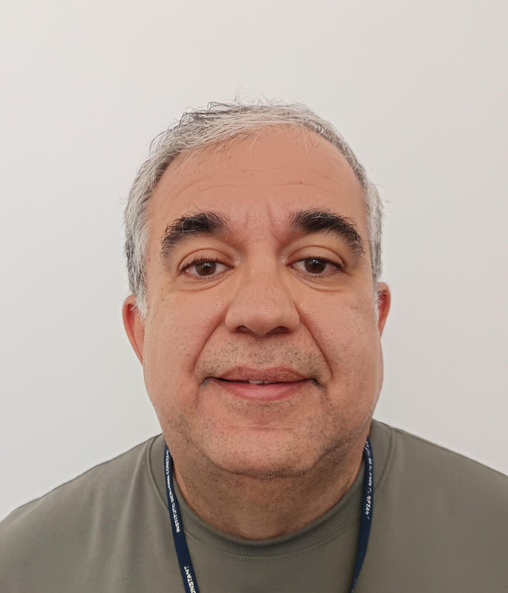

Corpo Docente
Conheça o time de professores responsáveis por ministrar o curso:
| Corpo Docente | ||
|---|---|---|
| Foto | Professor(a) | Formação Acadêmica |
 |
Anderson de Oliveira Vallejo | Mestrado em Educação - Universidade Estácio de Sá (UNESA) |
 |
Edilson da Silva | Mestrado em Telecomunicações - Universidade Federal do Rio de Janeiro (UFRJ) |
 |
Guidsson Coelho de Andrade | Mestrado em Ciência da Computação - Universidade Federal de Viçosa (UFV) |
 |
Joyce Miranda dos Santos | Doutorado em Informática - Universidade Federal do Amazonas (UFAM) |